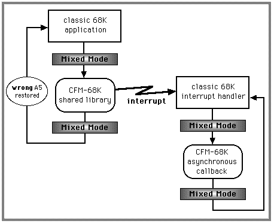
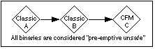

Legacy Document
Important: This document is part of the Legacy section of the ADC Reference Library. This information should not be used for new development.
Current information on this Reference Library topic can be found here:
ADC Home > Reference Library > Technical Notes > Legacy Documents > Carbon >
Important: This document is part of the Legacy section of the ADC Reference Library. This information should not be used for new development.
Current information on this Reference Library topic can be found here:
|
Defining the Interrupt ProblemUnder systems running older versions of the CFM-68K Runtime Enabler (prior to version 4.0), CFM-68K code that executes at interrupt time could trigger a system crash. This limitation on CFM-68K code existed because on 680x0 machines, CFM-68K Mixed Mode is not invoked by interrupts. Mixed Mode must be invoked every time a transition is made between the "classic-68K" and the "CFM-68K" runtime worlds. Mixed Mode plays the same role on the 68K as it does on the PowerPC. It serves as a runtime translation engine to manage transitions between the "classic" runtime world and the "native" (CFM) runtime world. This includes saving and restoring the A5 register on each transition. Any time a transition takes place between these two worlds, Mixed Mode must be invoked. Interrupts are a special situation with respect to Mixed Mode transitions. On the PowerPC, there is a tight integration of the interrupt system and Mixed Mode by an emulator. Native PowerPC code may run at interrupt time because the emulator performs the necessary Mixed Mode transitions. There is no need for an emulator on 68K machines. As such, mode switches don't take place between CFM-68K code that gets interrupted and a classic 68K interrupt handler that later gets invoked. CFM-68K code that runs at interrupt time could cause the A5 register to become invalid for classic code that executes after the interrupt. All subsequent A5-relative references (e.g., global data references) also become invalid. The following is an illustration of the sequence of events that could trigger this problem:  In this example, a classic 68K application calls a routine in a CFM-68K shared library. In order to do so, it must go through Mixed Mode. The CFM-68K code installs an asynchronous callback routine (also written in CFM-68K code). The CFM-68K code gets interrupted and the interrupt handler calls the user's callback routine. The problem in this example is that a transition is made from CFM-68K to classic code (via the interrupt) without going through Mixed Mode. In certain situations, the wrong value of A5 could get propagated back to the classic 68K application, resulting in a crash. The SolutionThe 4.0 version of CFM-68K fixes the most common problems with CFM-68K code running at interrupt time. The behavior of Mixed Mode has been modified; it now saves additional information into the switch frame on each transition. However, some limitations still exist. Please read the Limitations section in this document for more information. What Now WorksThe 4.0 version of the CFM-68K Runtime Enabler will allow the following to be safely implemented (either wholly or partially) in CFM-68K code, all of which were previously unsupported and could cause a system crash.
For each of these five examples, this includes cases where:
What Won't WorkThere are several limitations that were in the previous versions of CFM-68K and remain limitations in the 4.0 version of CFM-68K. These limitations are discussed in depth in the Limitations section in this document. In short, they include:
Change DescriptionThe 4.0 version of the CFM-68K Runtime Enabler provides a new version of Mixed Mode that allows most interrupt code to be implemented in CFM-68K code. With the exception of applications that use a non-Apple pre-emptive thread scheduler, no applications will need modification. Customers will simply install a new CFM-68K Runtime Enabler in their Extensions folder to take advantage of the fix.
The CFM-68K Runtime Enabler contains CFM-68K, Mixed Mode and several shared
libraries. With this new release, we've added the Apple Thread Manager and
Below is a brief summary of the changes to the enabler components included in this release. CFM-68KAll of the bug fixes that were included in the PowerPC version of the Code Fragment Manager for the System 7.5.5 Update are included in this release. Refer to Technote 1069 for details of the changes to CFM. Mixed ModeMixed Mode now saves additional state information on the switch frame for a mode transition. Two new API routines have been added for pre-emptive thread switchers to save and restore Mixed Mode state. These API are only callable from classic 68K clients. There will not be a CFM-68K interface to these routines. The new Mixed Mode and Gestalt headers that include these changes will be available on E.T.O. #23.
The two new API's are SaveMixedModeState
RestoreMixedModeState
Apple Thread ManagerThe Apple Thread Manager has been added to the 4.0 release of the CFM-68K Runtime Enabler. This version overrides any version of the Apple Thread Manager available before Mac OS 8. It calls the new Mixed Mode API to save and restore Mixed Mode state around a pre-emptive thread switch.
|
|
Note: |
Developers of new code who declare their code as interrupt-safe must document the pre-emptive safeness of their code. Code that is not interrupt-safe is also not pre-emptive safe; therefore, it is unnecessary to declare code as pre-emptive unsafe if it is already interrupt-unsafe. This is only necessary for code, such as plug-ins, that are provided to other developers and which could potentially be called from a pre-emptive thread. End users need not know about "pre-emptive safety".
Since all CFM-68K code is inherently pre-emptive unsafe, then so is any classic service that internally uses CFM-68K code or internally uses some other classic code that itself is pre-emptive unsafe code.
The following diagram is an example of pre-emptive unsafe code. All CFM-68K code is inherently pre-emptive unsafe, as defined above. In addition, classic code which in turn invokes CFM-68K code is itself pre-emptive unsafe, even if otherwise considered interrupt-safe.

Figure 2.
This new version of CFM-68K provides a means for pre-emptively threaded applications to call any interrupt-safe routine, even those that are otherwise deemed pre-emptive unsafe. A new Mixed Mode API is provided to save and restore the Mixed Mode state. Pre-emptive applications should be modified to call these services when switching threads to properly maintain the Mixed Mode state for each thread. Therefore, pre-emptively threaded applications should be separated into two categories: those that can and those that cannot call pre-emptive unsafe routines.
Applications that can call pre-emptive unsafe code include:
Applications that cannot call pre-emptive unsafe code include:
The 68K Macintosh operating system lacks the emulator present on the PowerPC. As a consequence, CFM-68K is subject to limitations which don't exist in the PowerPC version of CFM. This release of CFM-68K removes most of the limitations which existed in the previous version of CFM-68K. However, there are some remaining limitations which cannot be eliminated without a major CFM-68K architectural change or the implementation of a nanokernel on 680x0 machines.
The following limitations remain in the 4.0 version of CFM-68K and represent a difference between the 68K and PowerPC. Therefore, if you are porting PowerPC code to CFM-68K code, you should take the necessary precautions to ensure that your code obeys these restrictions.
This version of CFM-68K is known to be incompatible with early versions of AOL, Cyberdog and The Debugger.
Do not use 68K versions of AOL 3.0 prior to the Preview 6 release. Early beta releases contain crashing bugs unrelated to CFM-68K.
Do not use Cyberdog versions 1.2, 1.2.1 or 2.0 Alpha with this extension. There is an incompatibility between these versions of Cyberdog and the 4.0 version of the CFM-68K Runtime Enabler. This problem is fixed in the 2.0 Beta version of Cyberdog.
Early versions of The Debugger will cause CFM-68K to crash when an application quits. Be sure to obtain an update dated after March 3, 1997.
|
|
Acrobat version of this Note (168K). |
|
|
Download the New Version of CFM-68K |
||
|
Classic to CFM Project (324K) |
|